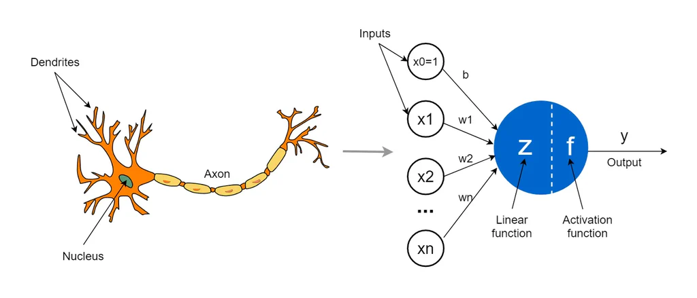
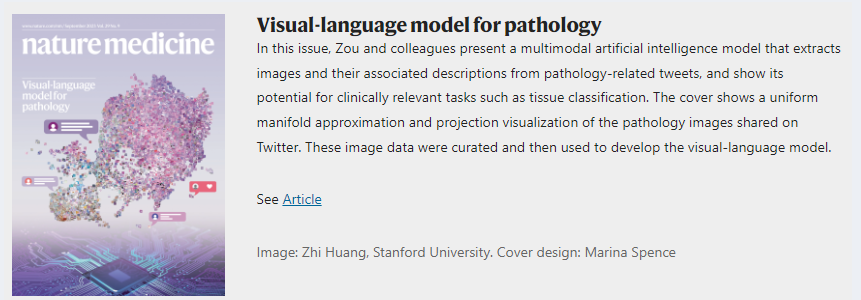
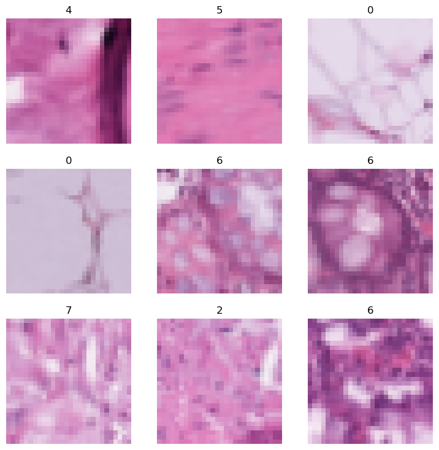
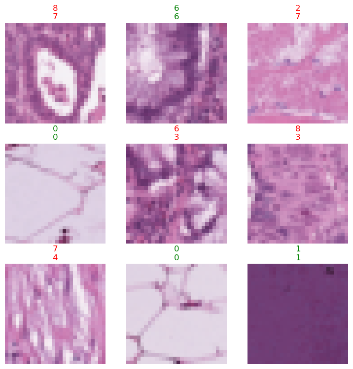
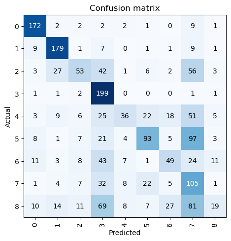
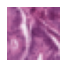
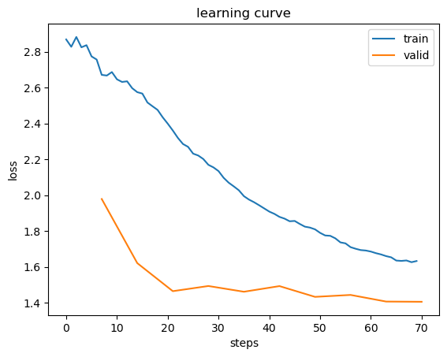

Show code cell source
#hide
import warnings
warnings.filterwarnings('ignore')
Deep Learning en Ingeniería Biomédica#
El deep learning, un subcampo del aprendizaje automático, ha revolucionado numerosos ámbitos, incluida la ingeniería biomédica. Al permitir que los modelos aprendan representaciones automáticamente a partir de grandes volúmenes de datos, el deep learning se ha convertido en un pilar de aplicaciones como el análisis de imágenes médicas, el descubrimiento de fármacos y la monitorización de pacientes. Gracias a su capacidad para manejar patrones complejos en los datos, cada vez se emplea más para abordar retos críticos en salud, desde la detección temprana de enfermedades hasta la medicina personalizada.
El deep learning es un método computacional que extrae y transforma datos mediante el uso de múltiples capas de redes neuronales. En ingeniería biomédica se ha aplicado, por ejemplo, al reconocimiento de patrones en imágenes médicas (como resonancias magnéticas o tomografías) o al análisis de datos de expresión génica. Cada capa de la red procesa las entradas de la capa anterior, refinando progresivamente la salida. Las capas se entrenan mediante algoritmos que minimizan el error y mejoran la precisión, lo que permite a la red realizar tareas como diagnosticar enfermedades o predecir la evolución clínica de un paciente. Los algoritmos de entrenamiento se tratarán en detalle en la siguiente sección.
Algunas de las tareas en las que el deep learning está liderando el avance, en particular en ingeniería biomédica y salud:
Procesamiento del Lenguaje Natural (NLP): extracción de información clave de historiales médicos; resumen de notas clínicas; reconocimiento automático de voz para dictado médico; sistemas de preguntas y respuestas para apoyo a la decisión clínica.
Imagen médica: detección de anomalías en radiografías, TAC o resonancias; cuantificación de características en láminas de patología; medición de estructuras anatómicas en ecografías; diagnóstico de retinopatía diabética y otras patologías en imágenes de retina.
Genómica y proteómica: predicción de estructuras proteicas (p. ej., AlphaFold); clasificación de proteínas a partir de secuencias; análisis de secuenciación tumoral-normal en investigación oncológica; identificación de mutaciones genéticas clínicamente relevantes; clasificación celular en imágenes de microscopía.
Generación de imágenes: mejora de imágenes médicas aumentando resolución; eliminación de ruido en resonancias o ecografías; generación de datos médicos sintéticos para entrenamiento de modelos.
Sistemas de recomendación: sugerencia de opciones de tratamiento personalizadas; identificación de ensayos clínicos adecuados para pacientes según su historia médica y genética.
Robótica: asistencia en cirugías robóticas; automatización de tareas de laboratorio como la manipulación de muestras biológicas; aumento de la precisión en sistemas de administración de fármacos.
Otras aplicaciones: predicción de la progresión de enfermedades; estimación de la demanda de recursos hospitalarios; conversión de texto a voz para pacientes con discapacidad visual, entre muchas más.
Lo más notable del deep learning es su versatilidad en tantas aplicaciones, y aun así casi todos estos avances se basan en un único tipo de modelo: la red neuronal. En el ámbito biomédico, las redes neuronales están en el núcleo de sistemas para diagnosticar enfermedades a partir de imágenes médicas, predecir resultados clínicos e incluso diseñar planes de tratamiento personalizados. El poder de este modelo radica en su capacidad para aprender patrones complejos de grandes volúmenes de datos sanitarios, ya provengan de imágenes, genómica o sistemas de monitorización de pacientes.
Redes Neuronales: Una Breve Historia#
Las redes neuronales, un componente fundamental del deep learning, tienen una larga historia que se remonta a mediados del siglo XX. Inspiradas inicialmente en la arquitectura del cerebro humano, han evolucionado hasta convertirse en una de las herramientas más poderosas de la inteligencia artificial. Gracias a su capacidad para aprender relaciones complejas y no lineales, en ingeniería biomédica se utilizan para analizar conjuntos de datos médicos complejos, como resonancias magnéticas o tomografías, y detectar patrones que ayudan al diagnóstico de enfermedades. Un ejemplo destacado es el uso de redes neuronales para la detección temprana del Alzheimer, procesando imágenes de resonancia magnética para identificar señales iniciales de degeneración cerebral.
En 1943, Warren McCulloch, neurofisiólogo, y Walter Pitts, lógico, desarrollaron un modelo matemático de una neurona artificial. Su artículo fundacional A Logical Calculus of the Ideas Immanent in Nervous Activity propuso que:
Debido a la naturaleza de “todo o nada” de la actividad nerviosa, los eventos neuronales y sus relaciones podían modelarse usando lógica proposicional. El comportamiento de cualquier red neuronal podía describirse con estos términos.
Este trabajo sentó las bases de las redes neuronales modernas, que hoy impulsan innovaciones biomédicas como la interpretación de la actividad cerebral, el diagnóstico de enfermedades neurológicas y la rehabilitación cognitiva. McCulloch y Pitts reconocieron que un modelo simplificado de una neurona biológica podía representarse mediante operaciones matemáticas básicas, como la suma y el umbral. El modelo imitaba el comportamiento neuronal: entradas de distintas fuentes se combinan y se produce una salida solo si se supera cierto umbral. Hoy este concepto es la base de las redes neuronales artificiales aplicadas en ingeniería biomédica, desde el análisis de la actividad neuronal hasta el desarrollo de interfaces cerebro-computadora.

Rosenblatt amplió el concepto de neurona artificial dándole la capacidad de aprender, y construyó el primer dispositivo físico que implementaba estos principios: el Mark I Perceptron. Sin embargo, en su libro Perceptrons (MIT Press), Minsky y Papert demostraron que un perceptrón de una sola capa no podía aprender funciones matemáticas básicas (como XOR). También señalaron que el uso de múltiples capas podría superar esas limitaciones, aunque solo la primera observación tuvo gran repercusión. Esto provocó un declive en la investigación sobre redes neuronales durante dos décadas. A pesar de ello, el deep learning moderno, especialmente en biomedicina (imágenes médicas, genómica), depende en gran medida de redes neuronales de múltiples capas para resolver problemas complejos de salud.
El trabajo más influyente de los últimos 50 años fue Parallel Distributed Processing (PDP), publicado en 1986 por David Rumelhart, James McClellan y el PDP Research Group. En su capítulo inicial expresaban una idea similar a la de Rosenblatt:
Las personas son más inteligentes que las computadoras porque el cerebro emplea una arquitectura computacional básica más adecuada para procesar información natural. Propondremos un marco computacional para modelar procesos cognitivos que parece más cercano al estilo de cómputo del cerebro.
La premisa sugiere que los métodos tradicionales de computación son fundamentalmente diferentes al funcionamiento cerebral, lo que explicaría por qué las computadoras han tenido dificultades en tareas como el reconocimiento de objetos en imágenes, que el cerebro realiza con facilidad. En ingeniería biomédica, esta visión ha impulsado el desarrollo de redes neuronales capaces de analizar actividad cerebral, diagnosticar condiciones neurológicas y mejorar la comprensión de los procesos cognitivos.
El enfoque de Parallel Distributed Processing (PDP) es sorprendentemente parecido a las redes neuronales actuales, especialmente en aplicaciones biomédicas. PDP definió el procesamiento distribuido en paralelo mediante varios componentes clave:
Un conjunto de unidades de procesamiento (neuronas biológicas o artificiales).
Un estado de activación (si la neurona está activa o “dispara”).
Una función de salida para cada unidad (cuánto se activa la neurona).
Un patrón de conectividad entre unidades (similar a las sinapsis cerebrales).
Una regla de propagación para transmitir patrones de actividad por la red.
Una regla de activación para combinar entradas y determinar la salida.
Una regla de aprendizaje para ajustar conexiones en función de la experiencia (análoga a la plasticidad sináptica).
Un entorno en el que opera el sistema (como datos de imágenes médicas, genómica o monitorización de pacientes en tiempo real).
Estos conceptos influyeron enormemente en los enfoques modernos de deep learning en salud, particularmente en el análisis de imágenes médicas, la predicción de progresión de enfermedades y el estudio de procesos neuronales.
Aunque hace más de 30 años ya se demostró que las redes neuronales prácticas necesitan más de dos capas para obtener buen rendimiento, este conocimiento solo se ha apreciado y aplicado plenamente en tiempos recientes. Hoy, gracias a redes más profundas, mejoras en hardware, mayor disponibilidad de datos médicos y avances algorítmicos, las redes neuronales están alcanzando su potencial. Esto ha permitido avances en diagnóstico médico automatizado, descubrimiento de fármacos y planificación de tratamientos personalizados.
Cómo aprender Deep Learning#
Aprender deep learning es una habilidad esencial para resolver problemas biomédicos complejos. Desde el análisis de grandes volúmenes de historiales clínicos hasta el desarrollo de modelos predictivos para la progresión de enfermedades, el deep learning se está convirtiendo en una herramienta clave para los ingenieros biomédicos. Esta sección presenta los conceptos, herramientas y recursos fundamentales para aplicar estas técnicas a desafíos reales en salud.
La parte más difícil del deep learning es práctica: ¿cómo asegurarse de tener suficientes datos médicos? ¿Están en el formato correcto? ¿Está entrenando bien el modelo? Si no, ¿cómo se corrige? Por eso es fundamental aprender haciendo. En ingeniería biomédica, la experiencia práctica con datos reales—como historiales clínicos, imágenes médicas o secuencias genómicas—mejora mucho más rápido las habilidades que enfocarse solo en la teoría. Resolver problemas de salud mediante programación da el contexto y la motivación necesarios para profundizar después en los aspectos teóricos.
¿Qué es una red neuronal?#
Si consideramos una red neuronal como una función matemática, es increíblemente flexible según sus pesos. De acuerdo con el teorema de aproximación universal, una red neuronal puede resolver en teoría cualquier problema con el nivel de precisión que se requiera. Esta flexibilidad la hace especialmente adecuada para abordar problemas biomédicos complejos, como detectar lesiones cutáneas o analizar secuencias genómicas. El desafío clave está en entrenar la red de manera efectiva, lo que implica encontrar la asignación correcta de pesos para el modelo.
Afortunadamente, no necesitamos un mecanismo nuevo de ajuste de pesos para cada tarea. En su lugar, el descenso estocástico de gradiente (SGD) permite actualizar los pesos automáticamente y mejorar el modelo para cualquier tarea, como clasificar imágenes médicas o predecir la evolución de pacientes.
Limitaciones inherentes al aprendizaje automático#
A partir de esto, podemos destacar algunos aspectos fundamentales del entrenamiento de un modelo de deep learning, especialmente en aplicaciones biomédicas:
No se puede crear un modelo sin datos.
Un modelo solo puede aprender a reconocer los patrones presentes en los datos de entrada usados durante el entrenamiento.
Este enfoque de aprendizaje genera predicciones, no acciones recomendadas (p. ej., diagnosticar una lesión cutánea, pero no determinar el tratamiento).
No basta con tener ejemplos de datos de entrada; también necesitamos etiquetas para esos datos. Por ejemplo, tener imágenes de lesiones cutáneas no es suficiente para entrenar un modelo: cada imagen debe estar etiquetada con información como si indica una condición benigna o maligna.
En salud, muchas organizaciones afirman no tener suficientes datos, pero en realidad a menudo carecen de datos etiquetados. Por ejemplo, clínicas de dermatología pueden disponer de archivos de imágenes de lesiones cutáneas, pero estas imágenes podrían no tener etiquetas estructuradas, ya que los médicos suelen redactar informes en texto libre.

Otro punto crítico proviene de considerar cómo un modelo interactúa con su entorno, especialmente en contextos sanitarios. Esta interacción puede crear un bucle de retroalimentación positiva: cuanto más se usa el modelo, más sesgados se vuelven los datos, lo que puede conducir a predicciones aún más sesgadas. Por ejemplo, si un modelo entrenado con demografías de pacientes limitadas o sesgadas se utiliza en una clínica, sus predicciones pueden reforzar sesgos existentes en el diagnóstico, afectando negativamente la atención al paciente.
Cómo funciona un reconocedor de imágenes médicas#
En esta sección, construiremos y afinaremos un reconocedor de imágenes médicas que pueda clasificar patologías de colon a partir de láminas histológicas usando el conjunto de datos MedMNIST.
El siguiente código hará lo siguiente:
Un conjunto de datos con miles de imágenes de láminas histológicas etiquetadas para la detección de patologías de colon se descargará en tu máquina local y se extraerá.
Se descargará de internet un modelo preentrenado que ya ha sido entrenado en conjuntos de datos de imágenes médicas a gran escala.
El modelo preentrenado se ajustará finamente mediante transfer learning, creando un modelo especialmente adaptado para reconocer enfermedades específicas —por ejemplo, neumonía o anomalías pulmonares— a partir de radiografías de tórax.
from fastai.vision.all import *
import medmnist
# Choose a specific MedMNIST dataset (e.g., 'pathmnist')
data_flag = 'pathmnist'
download = True
# Ensure the target folder exists
path = './datasets/ch8'
os.makedirs(path, exist_ok=True)
# Load the chosen MedMNIST dataset
info = medmnist.INFO[data_flag]
dataset_class = getattr(medmnist, info['python_class'])
train_dataset = dataset_class(split='train', download=download, root=path)
test_dataset = dataset_class(split='test', download=download, root=path)
Using downloaded and verified file: ./datasets/ch8\pathmnist.npz
Using downloaded and verified file: ./datasets/ch8\pathmnist.npz
from fastai.vision.all import *
import medmnist
from medmnist import INFO
import os
from torchvision import transforms
# Choose a specific MedMNIST dataset (e.g., 'pathmnist')
data_flag = 'pathmnist'
download = True
# Ensure the target folder exists
path = Path('./datasets/ch8')
os.makedirs(path, exist_ok=True)
# Load the chosen MedMNIST dataset
info = INFO[data_flag]
dataset_class = getattr(medmnist, info['python_class'])
train_dataset = dataset_class(split='train', download=download, root=path)
test_dataset = dataset_class(split='test', download=download, root=path)
Using downloaded and verified file: datasets\ch8\pathmnist.npz
Using downloaded and verified file: datasets\ch8\pathmnist.npz
# Create a function to convert MedMNIST dataset to Fastai's DataLoader
def medmnist_to_fastai(train_dataset, test_dataset):
train_images, train_labels = train_dataset.imgs, train_dataset.labels
test_images, test_labels = test_dataset.imgs, test_dataset.labels
# Convert images and labels into a DataFrame to work with Fastai's DataBlock
df_train = pd.DataFrame({'image': [Image.fromarray(img, 'RGB') for img in train_images],
'label': train_labels.squeeze()})
df_test = pd.DataFrame({'image': [Image.fromarray(img, 'RGB') for img in test_images],
'label': test_labels.squeeze()})
return df_train, df_test
# Convert MedMNIST to DataFrame suitable for Fastai
df_train, df_test = medmnist_to_fastai(train_dataset, test_dataset)
valid_pct = 0.02 # the validation percentage is low to speed up calculations
# Define DataBlock for Fastai
dblock = DataBlock(
blocks=(ImageBlock(PILImage), CategoryBlock),
get_x=ColReader('image'),
get_y=ColReader('label'),
splitter=RandomSplitter(valid_pct=valid_pct),
#item_tfms=Resize(28),
batch_tfms=aug_transforms()
)
DataLoaders es una clase ligera que simplemente almacena los objetos DataLoader que le pases y los expone como train y valid. Aunque es muy simple, es muy importante en fastai: proporciona los datos para tu modelo. La funcionalidad clave de DataLoaders se logra con estas cuatro líneas de código (tiene otras funciones menores que omitiremos por ahora):
class DataLoaders(GetAttr):
def __init__(self, *loaders): self.loaders = loaders
def __getitem__(self, i): return self.loaders[i]
train,valid = add_props(lambda i,self: self[i])
DataLoaders: clase de fastai que almacena múltiples objetos
DataLoaderque le pasas, normalmentetrainyvalid, aunque puedes tener tantos como quieras. Los dos primeros se exponen como propiedades.
Para convertir nuestros datos descargados en un objeto DataLoaders tenemos que decirle a fastai al menos cuatro cosas:
Qué tipos de datos estamos usando
Cómo obtener la lista de ítems
Cómo etiquetar esos ítems
Cómo crear el conjunto de validación
fastai incluye varios métodos de fábrica para combinaciones concretas de estos aspectos, útiles cuando tu aplicación y estructura de datos encajan en esos métodos predefinidos. Cuando no es así, fastai ofrece un sistema muy flexible llamado data block API. Con esta API puedes personalizar por completo cada etapa de la creación de tus DataLoaders.
Veamos cada argumento. Primero proporcionamos una tupla donde especificamos los tipos que queremos para las variables independiente y dependiente:
blocks=(ImageBlock, CategoryBlock)
La variable independiente es aquello a partir de lo cual hacemos predicciones, y la variable dependiente es nuestro objetivo. En este caso, las variables independientes son imágenes y las dependientes son las categorías (tipo de oso) de cada imagen.
Para este DataLoaders los ítems subyacentes estarán en un dataframe. Para decirle a fastai cómo obtenerlos usamos:
get_x=ColReader('image')
A la variable independiente a menudo se la denomina x y a la dependiente y. Aquí le indicamos a fastai qué función llamar para crear las etiquetas de nuestro conjunto de datos:
get_y=ColReader('labels')
En el data block definimos las Transforms que necesitamos. Un Transform contiene código que se aplica automáticamente durante el entrenamiento; fastai incluye muchas transformaciones predefinidas y añadir nuevas es tan simple como crear una función de Python. Hay dos tipos: item_tfms se aplican a cada ítem, mientras que batch_tfms se aplican a un lote de ítems a la vez usando la GPU, por lo que son especialmente rápidas.
Ahora que tenemos un objeto DataBlock, lo usamos como una plantilla para crear un DataLoaders. Aún debemos indicarle a fastai la fuente real de los datos—en este caso, el dataframe:
# Create DataLoaders
n = 500
dls = dblock.dataloaders(df_train, bs=64, n=n) # to speed up training we use only 500 images from the training dataset, you can either change the number or remove it to use the whole dataset.
Un DataLoaders incluye los DataLoader de validación y de entrenamiento. DataLoader es una clase que proporciona lotes de unos pocos ítems a la GPU. Al iterar sobre un DataLoader, fastai te dará 64 ítems (por defecto) a la vez, apilados en un único tensor. Podemos ver algunos de esos ítems llamando al método show_batch sobre un DataLoader.
dls.show_batch()

La siguiente línea del código que entrena nuestro reconocedor de imágenes le indica a fastai que cree una red neuronal convolucional (CNN) y especifica qué arquitectura usar (es decir, qué tipo de modelo crear), con qué datos entrenarla y qué métrica usar:
learn = vision_learner(dls, resnet18, metrics=error_rate)
Las CNN son el enfoque de referencia actual para crear modelos de visión por computador. Su estructura se inspira en el funcionamiento del sistema visual humano.
Sin embargo, la elección de la arquitectura rara vez es la parte más importante del proceso. Es un tema muy discutido en el ámbito académico, pero en la práctica no suele requerir mucho tiempo. Existen arquitecturas estándar que funcionan la mayor parte del tiempo; en este caso usamos ResNet, que es rápida y precisa para muchos conjuntos de datos y problemas. El 18 en resnet18 se refiere al número de capas de esta variante (otras opciones son 34, 50, 101 y 152). Los modelos con más capas tardan más en entrenar y son más propensos al sobreajuste (no se pueden entrenar durante tantas epochs antes de que la exactitud en validación empiece a empeorar). Por otro lado, con más datos pueden ser bastante más precisos.
# Train the model using a ResNet architecture
learn = vision_learner(dls,
resnet18,
metrics=error_rate,
# cbs=ShortEpochCallback(.01, short_valid=False),
)
learn.fine_tune(3)
# Show some results
learn.show_results()
| epoch | train_loss | valid_loss | error_rate | time |
|---|---|---|---|---|
| 0 | 3.261369 | 1.991843 | 0.743747 | 00:03 |
| epoch | train_loss | valid_loss | error_rate | time |
|---|---|---|---|---|
| 0 | 2.329051 | 1.788579 | 0.648138 | 00:06 |
| 1 | 2.204921 | 1.521289 | 0.540300 | 00:06 |
| 2 | 2.098126 | 1.478716 | 0.496943 | 00:06 |

Una métrica es una función que mide la calidad de las predicciones del modelo usando el conjunto de validación y se imprime al final de cada epoch. En este caso usamos error_rate, una función de fastai que indica el porcentaje de imágenes del conjunto de validación clasificadas incorrectamente. Otra métrica común para clasificación es accuracy (simplemente 1.0 - error_rate).
El concepto de métrica recuerda a la pérdida (loss), pero hay una diferencia importante. La pérdida define una “medida de rendimiento” que el sistema de entrenamiento puede usar para actualizar los pesos automáticamente; es decir, una buena pérdida es aquella que el descenso estocástico de gradiente puede optimizar con facilidad. En cambio, una métrica está pensada para humanos: debe ser fácil de entender y lo más cercana posible a lo que realmente quieres que haga el modelo. A veces la función de pérdida puede servir como métrica, pero no necesariamente.
vision_learner también tiene el parámetro pretrained, que por defecto es True (así que se usa aunque no lo especifiquemos). Esto fija los pesos del modelo a valores ya entrenados por expertos para reconocer mil categorías en 1,3 millones de fotos (usando el famoso conjunto ImageNet). Un modelo con pesos entrenados previamente se denomina pretrained model. Es muy útil porque, incluso antes de ver tus datos, el modelo ya “sabe” mucho: por ejemplo, partes del modelo detectan bordes, gradientes y colores, algo necesario en muchas tareas.
Al usar un modelo preentrenado, vision_learner elimina la última capa (que estaba ajustada a la tarea original, p. ej., clasificar ImageNet) y la sustituye por una o más capas nuevas con pesos aleatorios, de tamaño apropiado para tu conjunto de datos. A esta parte final se le llama head del modelo.
Usar modelos preentrenados es el método más importante para entrenar modelos más precisos, más rápido, con menos datos y menos coste.
Transfer learning: usar un modelo preentrenado para una tarea distinta de aquella para la que fue entrenado.
fastai siempre muestra la exactitud del modelo usando solo el conjunto de validación, nunca el de entrenamiento. Esto es crucial: si entrenas un modelo lo bastante grande durante suficiente tiempo, acabará memorizando las etiquetas de todos los ejemplos del conjunto de entrenamiento. Ese modelo no sería útil, porque nos interesa el rendimiento sobre imágenes no vistas. Ese es siempre el objetivo: que el modelo sea útil con datos futuros.
Incluso antes de memorizarlo todo, el modelo puede memorizar partes del conjunto de entrenamiento. Así, cuanto más entrenes, mejor será la exactitud en entrenamiento; la exactitud en validación también mejora un tiempo, pero luego empeora cuando el modelo empieza a memorizar en lugar de encontrar patrones generalizables. Cuando esto ocurre, decimos que hay sobreajuste.
El modelo que acabamos de afinar usa una ResNet preentrenada, que ya aprendió a reconocer imágenes generales; luego la adaptamos al conjunto PathMNIST. Tras el fine-tuning, el modelo se especializa en clasificar patologías de colon.
¿Cómo sabemos si el modelo es bueno? En la última columna de la tabla puedes ver la tasa de error, que es la proporción de imágenes clasificadas incorrectamente (p. ej., una patología mal diagnosticada). La tasa de error es nuestra métrica clave, una medida intuitiva de la calidad del modelo.
# Evaluate the model
interp = ClassificationInterpretation.from_learner(learn)
interp.plot_confusion_matrix()

La matriz de confusión muestra el número de predicciones correctas e incorrectas que hizo el modelo. Esta visualización ayuda a entender dónde tiene dificultades, por ejemplo al distinguir entre lesiones cutáneas similares.
Ahora puedes pasar una imagen de una lámina histológica al modelo para su clasificación. Asegúrate de que sea una imagen válida. El cuaderno analizará la imagen y devolverá su predicción junto con una puntuación de confianza.
im = PILImage.create(test_dataset.imgs[0])
pred, pred_idx, probs = learn.predict(im)
print(f"Prediction: {pred}; Probability: {probs[pred_idx]:.04f}")
im.show()
Prediction: 7; Probability: 0.3714
<Axes: >

Cómo las redes neuronales hacen predicciones#
Cuando pasas una imagen por la red neuronal, el modelo la procesa a través de varias capas. Cada capa realiza operaciones matemáticas sobre los datos de entrada (p. ej., los píxeles de la imagen) y va refinando progresivamente la comprensión de las características. Por ejemplo, las primeras capas pueden detectar patrones simples como bordes, mientras que las capas más profundas reconocen estructuras más complejas, como formas características de ciertas lesiones cutáneas. Finalmente, el modelo hace una predicción asignando una probabilidad a cada clase posible (p. ej., benigna o maligna).
Mejorando el modelo#
Si el rendimiento del modelo no es satisfactorio, hay varias formas de mejorarlo:
Aumento de datos: aplicar transformaciones como voltear, rotar o hacer zoom en las imágenes para incrementar artificialmente la diversidad del conjunto de entrenamiento.
Ajuste fino (fine-tuning): entrenar el modelo durante más epochs o ajustar la tasa de aprendizaje para mejorar el rendimiento.
# Example of data augmentation
dblock = DataBlock(
blocks=(ImageBlock(PILImage), CategoryBlock),
get_x=ColReader('image'),
get_y=ColReader('label'),
splitter=RandomSplitter(valid_pct=valid_pct),
#item_tfms=Resize(28),
batch_tfms=aug_transforms(do_flip=True, flip_vert=True, max_rotate=30)
)
# Create DataLoaders
dls = dblock.dataloaders(df_train, bs=64, n=n)
learn = vision_learner(dls,
resnet18,
metrics=error_rate,
# cbs=ShortEpochCallback(.1, short_valid=False),
)
learn.fine_tune(10)
| epoch | train_loss | valid_loss | error_rate | time |
|---|---|---|---|---|
| 0 | 3.223267 | 1.971703 | 0.767649 | 00:03 |
| epoch | train_loss | valid_loss | error_rate | time |
|---|---|---|---|---|
| 0 | 2.756138 | 1.978324 | 0.758755 | 00:07 |
| 1 | 2.596331 | 1.620664 | 0.555864 | 00:07 |
| 2 | 2.398460 | 1.464274 | 0.487493 | 00:06 |
| 3 | 2.201341 | 1.493079 | 0.470817 | 00:07 |
| 4 | 2.026988 | 1.461085 | 0.450806 | 00:06 |
| 5 | 1.895333 | 1.492575 | 0.429127 | 00:07 |
| 6 | 1.818913 | 1.432546 | 0.412451 | 00:07 |
| 7 | 1.730843 | 1.443276 | 0.413007 | 00:06 |
| 8 | 1.669149 | 1.406350 | 0.410228 | 00:07 |
| 9 | 1.632360 | 1.405136 | 0.409672 | 00:07 |
Al aumentar los datos y afinar el modelo, podemos reducir la tasa de error y mejorar la capacidad del modelo para generalizar.
Evaluación del rendimiento del modelo#
Una vez entrenado el modelo, es fundamental evaluar su rendimiento usando un conjunto de validación. En nuestro caso, dividimos el conjunto de datos en 80% imágenes de entrenamiento y 20% de validación. El rendimiento del modelo sobre el conjunto de validación es un buen indicador de qué tan bien generalizará a datos nuevos y no vistos.
# Plot the loss curves to evaluate training and validation performance
learn.recorder.plot_loss(0)
<Axes: title={'center': 'learning curve'}, xlabel='steps', ylabel='loss'>

La curva de pérdida nos ayuda a entender si el modelo está sobreajustando (aprendiendo demasiado de los datos de entrenamiento pero rindiendo mal en datos nuevos) o subajustando (incapaz de captar la complejidad de los datos).
Limitaciones y consideraciones éticas#
Es importante reconocer que, aunque modelos de aprendizaje automático como este pueden ayudar en el diagnóstico médico, no son perfectos. Pueden ocurrir errores de clasificación, y es crucial que estos modelos se evalúen rigurosamente antes de usarse en entornos clínicos. Además, deben abordarse aspectos como la privacidad de los datos, el consentimiento informado y los sesgos en los datos de entrenamiento para evitar consecuencias no deseadas, como diagnósticos sesgados en ciertos grupos demográficos.
Manejo del sobreajuste#
Uno de los desafíos más comunes en machine learning, especialmente con conjuntos de datos pequeños como ISIC, es el sobreajuste. Este ocurre cuando el modelo aprende los detalles y el ruido de los datos de entrenamiento hasta el punto de perjudicar su rendimiento en datos nuevos. Para mitigar el sobreajuste, podemos usar técnicas como dropout y regularización.
# Apply dropout and regularization to improve generalization
learn = vision_learner(dls, resnet18, metrics=error_rate,
model_dir='/tmp/model/',
ps=0.5, # probabilities used for the dropouts
# cbs=ShortEpochCallback(.1, short_valid=False),
)
learn.fine_tune(10)
| epoch | train_loss | valid_loss | error_rate | time |
|---|---|---|---|---|
| 0 | 3.199423 | 2.032626 | 0.748193 | 00:03 |
| epoch | train_loss | valid_loss | error_rate | time |
|---|---|---|---|---|
| 0 | 2.659537 | 1.905746 | 0.707615 | 00:07 |
| 1 | 2.471174 | 1.614642 | 0.548638 | 00:07 |
| 2 | 2.308626 | 1.510100 | 0.504169 | 00:06 |
| 3 | 2.131850 | 1.447852 | 0.467482 | 00:07 |
| 4 | 1.974621 | 1.428242 | 0.440245 | 00:06 |
| 5 | 1.838841 | 1.494769 | 0.429127 | 00:07 |
| 6 | 1.726485 | 1.509884 | 0.424125 | 00:07 |
| 7 | 1.658963 | 1.474761 | 0.418566 | 00:06 |
| 8 | 1.602255 | 1.444819 | 0.414675 | 00:07 |
| 9 | 1.580153 | 1.485377 | 0.420233 | 00:07 |
Al añadir dropout a la red, deshabilitamos aleatoriamente una fracción de las neuronas durante el entrenamiento, lo que ayuda a evitar que el modelo dependa demasiado de una sola característica de los datos.
Transfer Learning#
El transfer learning es especialmente útil en ingeniería biomédica porque los conjuntos de datos médicos suelen ser pequeños y costosos de recopilar. Al usar un modelo preentrenado en un conjunto de datos grande y general, y ajustarlo después en un conjunto más pequeño y específico del dominio, podemos lograr un alto rendimiento sin necesidad de grandes volúmenes de datos etiquetados.
En este cuaderno aprovechamos un modelo ResNet preentrenado, originalmente entrenado con millones de imágenes generales, y lo afinamos para especializarlo en la clasificación de lesiones cutáneas.
# Example of using a different pretrained model, such as EfficientNet
learn = vision_learner(dls, efficientnet_b0, metrics=error_rate,
# cbs=ShortEpochCallback(.1, short_valid=False),
)
learn.fine_tune(10)
| epoch | train_loss | valid_loss | error_rate | time |
|---|---|---|---|---|
| 0 | 3.211165 | 2.640593 | 0.889939 | 00:04 |
| epoch | train_loss | valid_loss | error_rate | time |
|---|---|---|---|---|
| 0 | 2.742377 | 1.971537 | 0.689828 | 00:05 |
| 1 | 2.629692 | 1.749916 | 0.586993 | 00:05 |
| 2 | 2.525275 | 1.714116 | 0.554753 | 00:05 |
| 3 | 2.372823 | 1.741643 | 0.534742 | 00:05 |
| 4 | 2.299573 | 1.752741 | 0.535853 | 00:05 |
| 5 | 2.243513 | 1.792108 | 0.531406 | 00:05 |
| 6 | 2.158350 | 1.798456 | 0.533074 | 00:05 |
| 7 | 2.102549 | 1.737350 | 0.518621 | 00:05 |
| 8 | 2.066642 | 1.729988 | 0.526959 | 00:05 |
| 9 | 2.045389 | 1.736192 | 0.530295 | 00:05 |
EfficientNet es otra arquitectura potente que, al afinarse para tareas específicas, puede ofrecer incluso mejor rendimiento que ResNet. La última línea de nuestro código anterior le dice a fastai cómo ajustar el modelo:
learn.fine_tune(1)
La arquitectura solo describe una plantilla de función matemática; no hace nada hasta que le damos valores a los millones de parámetros que contiene.
Esta es la clave del deep learning: determinar cómo ajustar los parámetros de un modelo para resolver tu problema. Para ajustar un modelo, debemos proporcionar al menos una información: cuántas veces mirar cada imagen (el número de epochs). El número de epochs depende del tiempo disponible y de cuánto tarde en la práctica el ajuste del modelo. Si el número es demasiado pequeño, siempre podemos entrenar más epochs después.
Pero, ¿por qué el método se llama fine_tune y no fit? fastai sí tiene un método fit, que entrena un modelo desde cero. Pero en este caso partimos de un modelo preentrenado y no queremos perder las capacidades ya adquiridas.
Fine-tuning: técnica de transfer learning donde los parámetros de un modelo preentrenado se actualizan entrenando durante más epochs con una tarea distinta de la original.
Al usar fine_tune, fastai aplica automáticamente ciertas técnicas. En su forma por defecto, hace dos pasos:
Usa un epoch para ajustar solo las partes del modelo necesarias para que la nueva head aleatoria funcione correctamente con tu conjunto de datos.
Usa el número de epochs solicitado para ajustar todo el modelo, actualizando más rápido los pesos de las capas finales (especialmente la head) que los de las capas iniciales (que, en general, no requieren muchos cambios respecto a los pesos preentrenados).
La head de un modelo es la parte recién añadida para adaptarlo al nuevo conjunto de datos. Un epoch es un recorrido completo sobre el dataset. Tras llamar a fit, los resultados se imprimen después de cada epoch, mostrando el número de epoch, la pérdida en entrenamiento y validación (la “medida de rendimiento” usada en el ajuste del modelo), y las métricas solicitadas (en este caso, la tasa de error).
Despliegue del modelo en escenarios reales#
Una vez entrenado y validado, el modelo puede desplegarse para ayudar a profesionales sanitarios en contextos reales. Para su despliegue en un dispositivo local o en la nube, el modelo puede exportarse e integrarse en software médico.
# Export the model for deployment
learn.export('model.pkl')
This exported model can then be loaded in other applications.
# Load the exported model
learn_inf = load_learner('model.pkl')
pred, pred_idx, probs = learn_inf.predict(im)
print(f"Prediction: {pred}; Probability: {probs[pred_idx]:.04f}")
Prediction: 6; Probability: 0.8935
Conjuntos de validación y de prueba#
Al entrenar un modelo, el proceso se centra en optimizar las predicciones únicamente con los datos de entrenamiento para determinar los parámetros de los pesos. Sin embargo, nosotros, como modeladores, influimos indirectamente en el modelo de una forma distinta: ajustamos los hiperparámetros basándonos en el rendimiento observado en los datos de validación. Esto implica que nuestra exploración y ajustes pueden llevar inadvertidamente a un sobreajuste sobre el propio conjunto de validación, ya que lo usamos repetidamente para probar y afinar. De la misma forma en que el modelo corre el riesgo de sobreajustar los datos de entrenamiento, nosotros corremos el riesgo de sobreajustar nuestras decisiones de hiperparámetros a los datos de validación.
La solución a este dilema es añadir otra capa de datos reservados: el conjunto de prueba. Igual que el conjunto de validación se mantiene separado del entrenamiento, el conjunto de prueba debe reservarse por completo, incluso de nuestros propios esfuerzos de ajuste. Nunca debe usarse para mejorar el modelo; se reserva únicamente para evaluar el rendimiento final. En esta estructura, los datos se dividen en una jerarquía según su nivel de exposición: los de entrenamiento se usan por completo, los de validación se emplean parcialmente para afinar, y los de prueba permanecen ocultos hasta el final. Esta jerarquía se alinea con las etapas de modelado: entrenamiento mediante backpropagation, ajuste manual de hiperparámetros y evaluación final de la capacidad de generalización.
Para obtener estimaciones fiables de exactitud, tanto el conjunto de validación como el de prueba deben incluir suficientes datos. Por ejemplo, si construyes un detector de gatos, conviene tener al menos 30 imágenes de gatos en el conjunto de validación. Si se dispone de un conjunto de datos grande, la división estándar del 20% para validación puede ser más de lo necesario; en cambio, cuando los datos son abundantes, destinar una parte a validación apenas afecta a la capacidad del modelo de generalizar.